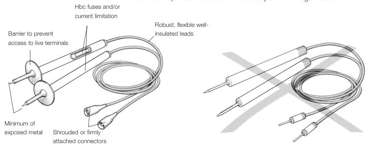
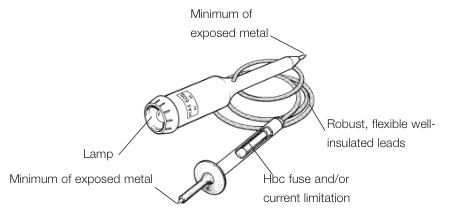
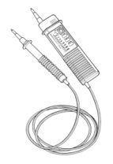

The original, as published: Health and Safety Executive, Electrical test equipment for use on low voltage electrical systems (GS38). Open Government Licence v3.0, https://www.nationalarchives.gov.uk/doc/open-government-licence/version/3/. Imported as published, from https://www.hse.gov.uk/pubns/priced/gs38.pdf https://www.hse.gov.uk/pubns/priced/gs38.pdf
1 This guidance is aimed at people who use electrical test equipment on low voltage electrical systems and equipment. These may include electricians, electrical contractors, test supervisors, technicians, managers or appliance repairers (including trades where electrical testing is not the primary activity, eg gas engineers, alarm companies etc).
2 The guidance provides advice on the selection and use of:
3 The Electricity at Work Regulations 1989 require those in control of part or all of an electrical system to ensure that it is safe to use and that it is maintained in a safe condition. The following are the main requirements when carrying out electrical testing.
Equipment should be, so far as is reasonably practicable:
There must be no live working* unless:
Work must be carried out in a safe manner. Things to consider when developing safe working practices include:
People at work must:
* Testing or fault finding on live systems or equipment is live working.
4 Unsuitable electrical test equipment can cause serious burns or electric shock. Arcing or ‘flashover’ caused by the use of inadequate test probes can result in burn injuries. Contact with inadequate test probes can result in shock injuries. Arcs, once drawn, ionise the surrounding air and cause further ‘flashovers’ to occur. These can rapidly engulf the working area, before anybody can escape.
5 Systems where voltages are below 50 V ac or 120 V dc (extra low voltage) reduce the risk of electric shock to a low level. If system energy levels are low, arcing is unlikely to cause burns. It is recommended that, where reasonably practicable, tests are carried out at reduced voltages to help reduce the risk of injury. Equipment should be constructed with suitably insulated and shrouded terminals to minimise the risk of short-circuits, which could cause danger. For example, short-circuiting battery terminals can cause high amounts of energy to be released.
6 In addition to the risk of electric shock and burns, there could be other risks to consider. For example, chemical burns (eg from battery acid) or falls from ladders or platforms when testing.
7 Always use suitable test probes, leads, lamps, voltage detectors and multimeters, as unsuitable equipment can cause electrical arcing due to:
8 Other causes of accidents which have led to electric shock are:
incorrect use of test equipment, eg:
using inadequately maintained test leads with visible damage, cracking, fraying or cut insulation or where normally insulated metal parts are exposed (these should be discarded and replaced);
Test probes, clips and leads
9 The test probes, clips and leads used in conjunction with electrical test equipment should be selected to prevent danger. Modern test probes, clips and leads should:
o have finger barriers or are shaped to guard against inadvertent hand contact with the live conductors under test; o are insulated to leave an exposed metal tip not exceeding 4 mm measured across any surface of the tip. Where practicable it is strongly recommended that this is reduced to 2 mm or less, or that springloaded retractable screened probes are used; o when used with a multimeter, should have suitable high-breaking capacity (hbc), sometimes known as hrc, fuse, or fuses,† with a suitable current rating (usually not exceeding 500 mA), except when used with a loop impedance or RCD tester where a value of 10 A is typically used or a current-limiting resistor and a fuse.**
* BS EN 61010 (see Further reading) defines measurement categories (CAT) as below; these reflect the level of overvoltage that can be expected at the point of measurement:
† Fuses, especially low current (500 mA), can add significant resistance to the test lead (up to 2 ohms). This should be taken into account when using fused leads in conjunction with resistance measuring equipment. When replacing fuses, the correct type and correct current and voltage rating must be used. Glass fuses are not suitable.
** Test equipment which predates the British Standards listed above, or was designed to another standard must be maintained to prevent danger and should comply with the guidance on probes and clips in paragraph 9.

leads which: o are adequately insulated (the choice of insulating material may be influenced by the environment in which the leads are to be used); o are coloured so that one lead can be easily distinguished from the other (voltage detectors tend not to have different coloured leads); o are flexible and of sufficient capacity for the duty expected of them; o are sheathed to protect against mechanical damage; o are long enough for the purpose, while not too long that they are clumsy or unwieldy; o do not have accessible exposed conductors other than the probe tips, or have live conductors accessible to a person’s finger if a lead becomes detached from a probe or equipment when in use. The test lead or leads are held captive and sealed into the body of the voltage detector.

Figure 1 Test probes and leads (recommended type)
Figure 2 Test probes and leads (not recommended)
10 Probes can be provided with a variety of shapes of tip to allow access to different types of contact.
Sockets and terminals
11 The risk of inadvertent hand or finger contact with any live test socket conductor when the equipment is live must be reduced. The terminals and test sockets of test equipment may require shrouding in accordance to the category location. Test leads and equipment conforming to BS EN 61010 or BS EN 61243-3 will meet this requirement.
Voltage detectors
12 Equipment used solely for detecting voltage fall into two categories. These are:

detectors which use two or more independent indicating systems (one of which may be audible) and limit energy input to the detector by the circuitry used. An example is a 2-pole voltage detector, ie a detector unit with an integral test probe, an interconnecting lead and a second test probe. These detectors may be designed and constructed to limit the current and energy which can flow into the detector. The limitation is usually provided by a combination of circuit design, using the concept of protective impedance, and current-limiting resistors built into the test probes. These detectors may be provided with inbuilt test features to check the functioning of the detector before and after use. The interconnecting lead and second test probe are not detachable components. These types of detector do not require additional current limiting resistors or hbc fuses to be fitted provided that they conform to BS EN 61243-3.

Figure 3 Typical test lamp
13 Single-pole or non-contact live-circuit detectors sometimes referred to as ‘voltage sticks’ should only be used for identifying live equipment, not for proving that it is dead. There are particular requirements for the use of non-contact devices in coalmines. Only devices which make contact with the conductor (ie not proximity devices) should be used for proving dead. However, non-contact or proximity detectors can be useful in indicating if something is live, eg when attempting to remove a single cable installed in trunking containing many single cables.

Figure 4 A typical 2-pole voltage detector
14 Test lamps and voltage detectors should be clearly marked with:

15 The use of test equipment falls into four main categories:
Testing for voltage forms an essential part of the procedure for proving a system dead before starting work (ie a safe isolation procedure), but may also be associated with simple tests to prove the presence of voltage. Measuring voltage, current etc and verifying polarity are more concerned with commissioning procedures, fault-finding and testing electrical installations.
Precautions before testing
16 A risk assessment should be carried out and, where necessary, measures put in place, including using appropriate personal protective equipment (PPE). More guidance on risk assessment can be found at www.hse.gov.uk/risk. For more information on safe working practices see Electricity at Work. Safe Working Practices (see Further reading).
17 Before testing begins you must establish that the test device, including all leads, probes, clips and connectors, is suitably rated for the installation category (CAT II, III or IV) and for the voltages and currents which may be present on the system or equipment under test.
18 Before any testing is carried out, you must ensure that:
the working environment does not present additional dangers, including:
19 Where a test is being made simply to establish the presence or absence of voltage, a proprietary test lamp or 2-pole voltage detector suitable for the working voltage of the system should be used, rather than a multimeter. The use of incorrectly set multimeters (or makeshift devices) for voltage detection has often caused accidents.
20 Any device used to prove dead may fail to indicate danger (eg a faulty lamp not indicating a live circuit). Such devices should be proved before and after use. This should be done preferably on a voltage proving unit (some devices have built-in proving units) or otherwise on a known live source of similar voltage to the circuit under test (providing precautions are taken to prevent danger arising).
Precautions during testing
21 For voltage detection or measurement, test leads protected by a fuse (or fuses) are recommended when voltmeters and in particular multimeters are used. Always connect the test leads to the equipment before connecting to the circuit to be measured. Although some multimeters are fitted with electromechanical overload devices, these are often inadequately rated to deal with short-circuit energy present on electrical power systems.
22 Test equipment conforming to the requirements of BS EN 61010 is protected internally by high-breaking capacity fuses and clearances appropriate to the measurement category and voltage rating of the equipment. Where equipment is not designed to BS EN 61010, it is usually necessary to use leads which incorporate high-breaking capacity (hbc) fuses even if it has an overload trip. A risk assessment should be performed to establish if fused leads are necessary for the work to be undertaken.
23 If terminal clips are provided for connection to test points, they should be adequately insulated and arranged to be suitable for use with the test leads, as a safe alternative to the use of test probes.
24 It is important that a multifunction or multirange meter is set to the correct function and/or range before the connections are made. Where there is doubt about the value of voltage to be detected or measured, the highest range should be selected at first, provided that the maximum voltage possible is known to fall within the range of the equipment.
25 Progressive voltage detection or measurement is often used to prove circuit continuity. The dangers from exposed live conductors should be borne in mind when using this method. In many cases, continuity testing can be carried out safely with the apparatus dead, using a self-contained low voltage dc source and indicator (after safe isolation procedures have been adopted).
26 If a clamp meter is used, check first that there is adequate working space free from danger (ie from bare live conductors at dangerous voltages) at the place where the equipment will be held. The clamp meter should always be examined visually before it is used; if defects are present the equipment should not be used.
27 Special precautions and provisions may be necessary for current measurement in CT secondary circuits and such measurement techniques are outside the scope of the guidance in this document.
28 Where current measurements are to be made using a multimeter, the connections should be made with the apparatus dead, and should be made secure before the power is switched on. Any such temporary connections need to be adequately rated both for current and voltage.
29 If regular testing needs to be done, eg on complex control panels, nearby bare live conductors should not be accessible (eg screened) where access is not required. Alternatively, purpose-made screened test points or equipment may be provided.
Examination of equipment
30 All items of test equipment, including those items issued on a personal basis, must be maintained by a competent person. You should keep records of inspection and testing of the equipment, particularly where faults are found. These records will help decide how often visual inspection or testing will need to be carried out. It is important that personnel using the equipment are made aware of the kinds of defect which may occur in test equipment. Examples of common problems are: